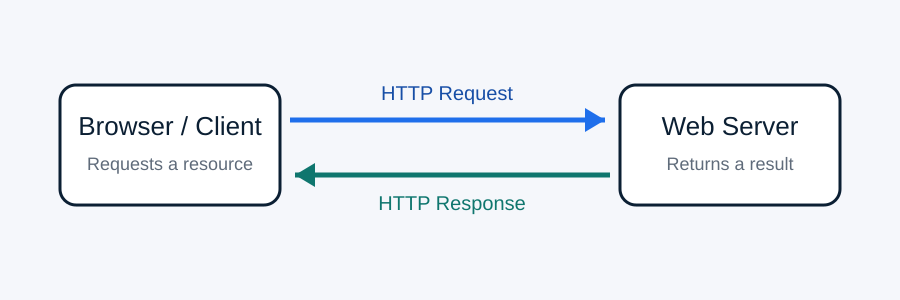

HTTP Evolution
Trace HTTP/0.9, HTTP/1.0, HTTP/1.1, HTTP/2, and HTTP/3.
IT 3203 Web Development • Milestone #1
The evolution, structure, and future of Hypertext Transfer Protocol.
HTTP is the communication protocol that allows browsers, web servers, applications, APIs, and content delivery networks to exchange information across the World Wide Web. This project examines how HTTP grew from a one-line document request into the secure, high-performance protocol family used by modern web applications.
This website expands the research from Assignment #1 into a multi-page learning resource. It explains HTTP's purpose, history, request-and-response model, methods, status codes, headers, HTTPS, HTTP/2, HTTP/3, and QUIC. The goal is to show that HTTP has kept the same basic client/server meaning while improving performance, security, and reliability over time.

Trace HTTP/0.9, HTTP/1.0, HTTP/1.1, HTTP/2, and HTTP/3.
Learn how requests, responses, methods, headers, bodies, and status codes fit together.
Explore HTTPS, TLS, multiplexing, QUIC, CDNs, and today's web performance.
Review seven important HTTP concepts with short examples.
Use standards documents and trusted learning resources for deeper study.
Meet the student author and learn how the project connects to IT 3203.
Every normal web page depends on a chain of HTTP exchanges. HTML, CSS, JavaScript, images, API responses, and many media files are delivered through HTTP. Understanding the protocol helps web developers troubleshoot errors, improve performance, configure security, and understand what the browser is doing behind the page.